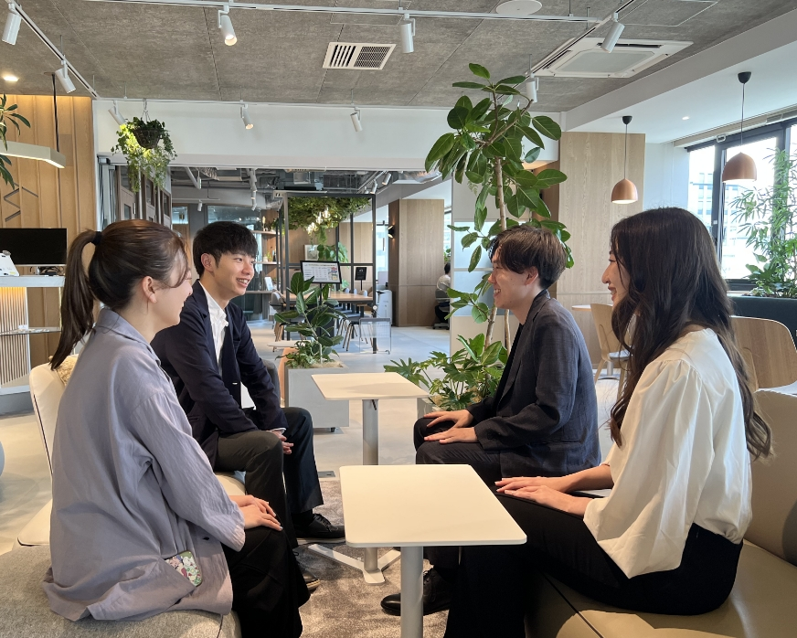

採用コミュニティサービス
採用を、
ひとりで抱えない。
同じ業界の企業同士で、採用の数字や試行錯誤を持ち寄る。
SES・建設・不動産・製造・サービス・介護、6業界の採用コミュニティです。
無料で相談する
ご相談は無料です。

Challenges
ほかの企業に聞いてみたいこと
社内では聞きにくい。でも、本当は知りたい。

- 同業他社は、1人採るのにいくらかけている？
- どの採用手法を選べばいいのか、判断材料がない
- うまくいかなかった施策は、何が原因だった？
- 採用の悩みを、社内に相談できる人がいない
- 採用がうまくいかないのは、うちだけ？
- 内定辞退や早期離職を、他社はどう防いでいる？
Industries
業界ごとに、6つのコミュニティ。
同じ業界の企業だから、数字も悩みもそのまま比べられます。
- SES・SIer
- 建設
- 不動産
- 製造
-
サービス・
店舗スタッフ - 介護
各コミュニティで共有するテーマ
How it works
一社の経験を、みんなの知見に
成功した施策も、成果につながらなかった工夫も。
職種や期間をそろえて振り返れるよう、RELIALが整理します。
企業 A企業 B企業 C
参加企業すべてにレポートを共有
自社で活かし、
次のアンケートへ
次のアンケートへ
Sample report
参加企業だけが見られる、採用データレポート。
同じ業界の企業の採用データを、匿名で集計したレポートです。
その一部をご紹介します。
左右にスワイプして4つの見本を見られます。
応募から入社までの歩留まり
応募00%
面接00%
内定00%
入社00%
採用までにかかった期間
短い採用までの期間長い
効いた取り組み・見直した取り組み
効いた取り組み求人原稿に一日の仕事の流れを掲載。
見直した取り組み応募後の初回連絡のタイミングを変更。
レポートの見本を見てみる
無料相談で、同じ業界のレポート見本をお見せします。
Benefits
参加して得られる3つのこと
- 01
相場をつかむ
同じ業界・規模の企業と、採用単価や予算の使い方を比べられます。
- 02
施策を持ち帰る
他社で効いた工夫を知り、自社で試せます。
- 03
自社の立ち位置が分かる
同業の中で、自社の採用がどの段階にあるかが分かります。
Data care
安心して共有するために
社名の公開は任意です。紹介する場合は、事前に同意をいただきます。
企業が特定されにくい単位で集計します。
回答できる範囲で参加できます。候補者の個人情報は不要です。
いただいた情報は、レポート作成のためだけに使います。
参加しても、採用支援の営業はしません。
いつでも退会できます。
Membership
参加について、まずはご相談ください。
参加の形や条件は、業界や企業の状況によって異なります。
まずはお気軽にお問い合わせください。
参加について相談する
相談後の検討で構いません。
Getting started
参加の流れ
01 参加の相談
業界・募集職種・知りたいことをお聞かせください。
02 参加のご案内
業界のコミュニティと、情報の扱いをご説明します。
03 アンケートに回答
回答できる範囲で構いません。
04 レポートが届く
業界の集計レポートをお届けします。
Message
中小企業が、採用で学び合える場へ

FAQ
よくあるご質問
Q1. 採用支援を契約していなくても参加できますか？
はい、参加いただけます。参加の条件については、まずはご相談ください。
Q2. アンケートには何を書けばいいですか？
募集職種、採用手法、募集期間、応募数・採用数、試した取り組みなどです。回答できる範囲で構いません。
Q3. うまくいっていない数字を出すのは気が引けます。
成果が出なかった取り組みこそ、同じ業界の企業にとって貴重な情報です。社名が公開されることはありません。
Q4. 規模の違う企業の数字は参考になりますか？
人数・期間・地域・予算をそろえて比べられるよう集計しています。
Q5. 同じ業界の競合に、自社の数字が知られませんか？
個別の回答をそのまま共有することはありません。企業が特定されない形に集計・編集してお届けします。
Q6. 参加したら、採用支援の営業をされませんか？
情報共有と採用支援のご案内は分けています。ご希望がない限り、営業のご連絡はしません。
Q7. 採用人数が少なくても、参加する意味はありますか？
年に1〜2名の採用でも、同じ業界のデータは採用手法を選ぶ判断材料になります。
Q8. 途中でやめることはできますか？
はい、いつでも退会できます。
Q9. 6業界以外でも参加できますか？
現在は6業界で運営しています。そのほかの業界については、まずはご相談ください。
Q10. 参加企業同士で交流する機会はありますか？
参加企業同士の交流の場を準備しています。